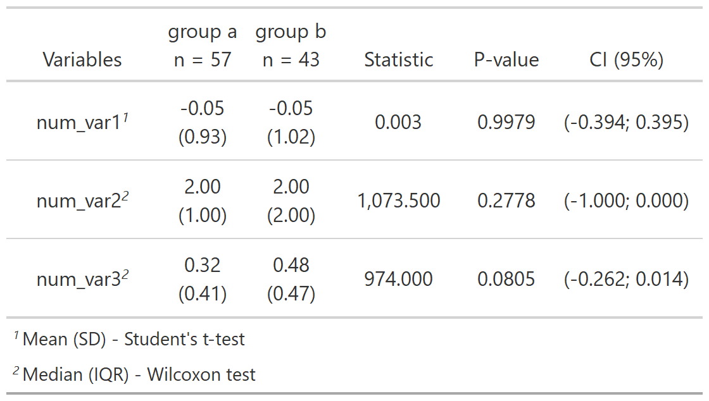

- Intro
- Installation
- Functions
The goal of relper is to provide miscellaneous functions to assist in data cleaning and visualization.
Installation
You can install the developer version of relper with:
remotes::install_github("vbfelix/relper")Functions
“as_” functions
This functions convert values to another type.
as_num
The goal of as_num is to be a version of as.numeric, where the input is a string number with marks, such as “10.000,02”.
as_num("123.456,78")
#> [1] 123456.8as_perc
The goal of as_perc is to compute a number as percentage. By default the function will just multiply values by 100.
mtcars %>%
count(vs,am) %>%
mutate(prop = n/sum(n)) %>%
mutate(perc = as_perc(prop))
#> vs am n prop perc
#> 1 0 0 12 0.37500 37.500
#> 2 0 1 6 0.18750 18.750
#> 3 1 0 7 0.21875 21.875
#> 4 1 1 7 0.21875 21.875If you set the argument sum to TRUE the function will divide the values by their total and multiply by 100.
“calc_” functions
This functions compute a certain value.
calc_acf
The goal of calc_acf is to compute the auto-correlation function, given by:
$$\frac{\sum_\limits{t = k+1}^{n}(x_t - \bar{x})(x_{t-k} - \bar{x})}{\sum_\limits{t = 1}^{n} (x_t - \bar{x})^2 },$$ where:
- xt is a time series of length n;
- xt − k is a shifted time series by k units in time;
- x̄ is the average of the time series.
x <- rnorm(100)
calc_acf(x)
#> # A tibble: 21 x 2
#> acf lag
#> <dbl> <dbl>
#> 1 1 0
#> 2 0.159 1
#> 3 -0.0818 2
#> 4 -0.163 3
#> 5 -0.162 4
#> 6 -0.00682 5
#> 7 -0.0441 6
#> 8 -0.0992 7
#> 9 0.0595 8
#> 10 0.117 9
#> # ... with 11 more rowsIf you pass a second vector in the argument y the cross-correlation will be computed instead:
$$\frac{n \left( \sum_\limits{t = 1}^{n}x_ty_t \right) - \left[\left(\sum_\limits{t = 1}^{n}x_t \right) \left(\sum_\limits{t = 1}^{n}y_t\right) \right]}{\sqrt{\left[n \left( \sum_\limits{t = 1}^{n}x_t^2 \right) - \left( \sum_\limits{t = 1}^{n}x_t \right)^2\right]\left[n \left( \sum_\limits{t = 1}^{n}y_t^2 \right) - \left( \sum_\limits{t = 1}^{n}y_t \right)^2\right]}},$$ where:
- xt is a time series of length n;
- yt is a time series of length n.
calc_auc
The goal of calc_auc is to compute the area under a curve (AUC).

You can define the argument limits to get the AUC of that limit.

calc_corr
The goal of calc_corr is to compute Pearson, Kendall and Spearman correlation coefficients.
calc_cramers_v
The goal of calc_cramers_v is to compute Cramer’s V, given by:
$$\sqrt{\frac{X^2}{n\min(r-1,c-1)}},$$ where:
- X2 the chi-square statistic;
- n is the sample size;
- r is the number of rows in the contingency table;
- c is the number of columns in the contingency table.
m <- matrix(c(12, 5, 7, 7), ncol = 2)
chi_square <- chisq.test(m)
calc_cramers_v(chi_square)
#> [1] 0.1438099calc_cv
The goal of calc_cv is to compute the coefficient of variation (CV), given by:
$$\frac{s}{\bar{x}},$$ where:
- s is the sample standard deviation;
- x̄ is the sample mean.
If you set the argument as_perc to TRUE, the CV will be multiplied by 100.
calc_cv(x,as_perc = TRUE)
#> [1] 83.71calc_date_aux
The goal of calc_date_aux is to compute variables derived from date, such as year, month, day, etc.
dt <- seq(as.Date("1910/1/1"), as.Date("1911/1/1"), "days")
df_dt <- data.frame(dt = dt)
calc_date_aux(df_dt,dt) %>% glimpse()
#> Rows: 366
#> Columns: 12
#> $ dt <date> 1910-01-01, 1910-01-02, 1910-01-03, 1910-01-04, 1910-01-0~
#> $ mon_abb <ord> jan, jan, jan, jan, jan, jan, jan, jan, jan, jan, jan, jan~
#> $ mon_lbl <ord> janeiro, janeiro, janeiro, janeiro, janeiro, janeiro, jane~
#> $ mon_num <dbl> 1, 1, 1, 1, 1, 1, 1, 1, 1, 1, 1, 1, 1, 1, 1, 1, 1, 1, 1, 1~
#> $ day_num <int> 1, 2, 3, 4, 5, 6, 7, 8, 9, 10, 11, 12, 13, 14, 15, 16, 17,~
#> $ year_num <dbl> 1910, 1910, 1910, 1910, 1910, 1910, 1910, 1910, 1910, 1910~
#> $ year_lbl <fct> 1910, 1910, 1910, 1910, 1910, 1910, 1910, 1910, 1910, 1910~
#> $ week_num <dbl> 1, 1, 1, 1, 1, 1, 1, 2, 2, 2, 2, 2, 2, 2, 3, 3, 3, 3, 3, 3~
#> $ epiweek_num <dbl> 52, 1, 1, 1, 1, 1, 1, 1, 2, 2, 2, 2, 2, 2, 2, 3, 3, 3, 3, ~
#> $ isoweek_num <dbl> 52, 52, 1, 1, 1, 1, 1, 1, 1, 2, 2, 2, 2, 2, 2, 2, 3, 3, 3,~
#> $ wday_abb <ord> sáb, dom, seg, ter, qua, qui, sex, sáb, dom, seg, ter, qua~
#> $ wday_lbl <ord> sábado, domingo, segunda-feira, terça-feira, quarta-feira,~The new variables respective to the date are:
- mon_abb: a factor with the abbreviated name of the month;
- mon_lbl: a factor with the complete name of the month;
- mon_num: the number of the month;
- day_num: the number of the day within the month;
- year_num: the number of the year;
- year_lbl: a factor with the number of the year;
- week_num: the number of complete seven day periods that have occurred between the date and January 1st, plus one;
- epiweek_num: the US CDC version of epidemiological week. Starts on Sunday;
- isoweek_num: the week as it would appear in the ISO 8601 system, which uses a reoccurring leap week. Starts on Monday;
- wday_abb: a factor with the week day abbreviated name;
- wday_lbl: a factor with the week day complete name.
calc_date_diff
The goal of calc_date_diff is to compute the difference between two dates.
date1 <- lubridate::dmy("01/05/1998")
date2 <- lubridate::dmy("21/11/2018")
calc_date_diff(date1 = date1,date2 = date2,unit = "days")
#> [1] 7509So, the difference in day of 21/11/2018 and 01/05/1998 is 7,509 days.
If you need to add a constant to your difference you can use the argument add.
calc_date_diff(date1 = date1,date2 = date2,unit = "days",add = 1)
#> [1] 7510calc_date_range
The goal of calc_date_range is to compute the range of a date vector, and create a string with the minimal and maximum date.
dt <- seq(as.Date("1910/1/1"), as.Date("1911/1/1"), "days")
calc_date_range(dt)
#> [1] "01/01/1910 - 01/01/1911"calc_geometric_mean
The goal of calc_geometric_mean is to compute the geometric mean, given by:
$$\sqrt[n]{\prod\limits_{i=1}^{n}x_i} = \sqrt[n]{x_1\times x_2 \times...\times x_n},$$ where:
- xi is a numeric vector of length n.
calc_geometric_mean(x)
#> [1] 1.106355calc_harmonic_mean
The goal of calc_harmonic_mean is to compute the harmonic mean, given by:
$$\frac{n}{\sum\limits_{i=1}^{n}\frac{1}{x_i}},$$ where:
- xi is a numeric vector of length n.
calc_harmonic_mean(x)
#> [1] -1.048597calc_mean
The goal of calc_mean is to compute the arithmetic, geometric and harmonic mean.
calc_mean(x)
#> # A tibble: 1 x 3
#> arithmetic geometric harmonic
#> <dbl> <dbl> <dbl>
#> 1 1.09 1.11 -1.05calc_mode
The goal of calc_mode is to compute the mode.
set.seed(123);cat_var <- sample(letters,100,replace = TRUE)
table(cat_var)
#> cat_var
#> a b c d e f g h i j k l m n o p q r s t u v w y z
#> 1 2 5 2 4 3 6 4 5 4 3 3 3 6 4 3 3 3 4 3 4 8 3 10 4We can see that the letter “y” is the one that appears the most, so it is the mode of the variable.
calc_mode(cat_var)
#> [1] "y"calc_peak_density
The goal of calc_peak_density is to compute the peak density value of a numeric value.
Let’s say we eant to discover what value is the peak in the density above.
calc_peak_density(x)
#> [1] 0.8076021“format_” functions
This functions modify an existing variable for aesthetic reasons.
format_digit
The goal of format_digit is to add zero(s) on the left of a number.
x <- c(1,4,10,12,100,2000)
format_digit(x)
#> [1] "01" "04" "10" "12" "100" "2000"You can also set the argument digits to add more zeros.
format_digit(x,digits = 4)
#> [1] "0001" "0004" "0010" "0012" "0100" "2000"format_num
The goal of format_num is to add markers to a number.
format_num(12345.67)
#> [1] "12,345.67"You can also change the markers for other characters of your choice.
format_num(12345.67,decimal_mark = "*",thousand_mark = "#")
#> [1] "12#345*67"Also, if you are Brazilian like me, I made a argument to make our lives easier.
format_num(12345.67,br_mark = TRUE)
#> [1] "12.345,67"format_scale
The goal of format_scale is to reescale a variable, given by:
$$y_i = (y_{\max} - y_{\min}) * \left[\frac{x_i - \min(x_i)}{\max(x)-\min(x)} \right] + y_{\min},$$ where:
- yi is the reescaled numeric vector;
- ymax is the new maximum value, after the reescale;
- ymin is the new minimum value, after the reescale;
- xi is the original numeric vector;
- min (xi) is the original minimum value of xi;
- max (xi) is the original maximum value of xi.
By default the vector will be reescaled to have 0 and 1 as their new minimum and maximum values.
x <- seq(-3,3,l = 10)
x
#> [1] -3.0000000 -2.3333333 -1.6666667 -1.0000000 -0.3333333 0.3333333
#> [7] 1.0000000 1.6666667 2.3333333 3.0000000
y <- format_scale(x)
y
#> [1] 0.0000000 0.1111111 0.2222222 0.3333333 0.4444444 0.5555556 0.6666667
#> [8] 0.7777778 0.8888889 1.0000000You can also change the range of the new scale.
z <- format_scale(x,new_min = 25,new_max = 100)format_p_value
The goal of format_p_value is to change a p value, by considering a lower bound value where if is the valor is smaller than it, let’s say 0.001, the p value will be changed to <0.001
format_p_value(c(.001,.00000001),lower_bound = 0.001)
#> [1] "0.0010" "<0.001"“is_” functions
This functions return a boolean, given a condition.
is_integer
The goal of is_integer is to check if a value is a integer, not considering their variable type but the value.
is_integer(1.1)
#> [1] FALSE
is_integer(1)
#> [1] TRUEis_negative
The goal of is_negative is to check if a value is negative.
is_negative(1)
#> [1] FALSE
is_negative(-1)
#> [1] TRUEis_outlier
The goal of is_outlier is to check if a value is an outlier, by using the boxplot outlier criteria, given by:
[x<(Q1−1.5*IQR)] | [x>(Q3−1.5*IQR)],
where:
- Q1 is the first quartile;
- Q3 is the third quartile;
- IQR is the interquartile range, e.g., Q3 − Q1.
x <- c(1,2,3,5,7,8,12,100)
is_outlier(x)
#> [1] FALSE FALSE FALSE FALSE FALSE FALSE FALSE TRUEis_positive
The goal of is_positive is to check if a value is positive.
is_positive(1)
#> [1] TRUE
is_positive(-1)
#> [1] FALSE“isnot_” functions
This functions will check if a variable does not pass a certain condition.
isnot_in
The goal of isnot_in is to check if a variable is not contained, it is the same as !(x %in% y).
isnot_in("a", letters)
#> [1] FALSE“plt_” functions
This functions are extensions to ggplot2 objects.
library(ggplot2)
plot <-
ggplot(mtcars,aes(qsec,mpg))+
geom_point()
plotplt_flip_y_title
The goal of plt_flip_y_title is to flip the title from y axis, to be read horizontally.
plot + plt_flip_y_titleplt_identity_line
The goal of plt_identity_line is to add a identity line to a scatter plot.
plot + plt_identity_line(color = "red")plt_no_background
The goal of plt_no_background is to remove the background.
plot + plt_no_backgroundplt_scale_auto
The goal of plt_scale_auto is to add a automatic scale.
plot + plt_scale_auto(axis = "x",n_breaks = 5)
plot +
plt_scale_auto(axis = "x",n_breaks = 5)+
plt_scale_auto(axis = "y",n_breaks = 3)plt_theme_map
The goal of plt_theme_map is to add a theme appropriate for a map.
plot + plt_theme_map()plt_theme_x
The goal of plt_theme_x is to remove major and minor grid lines from y axis.
plot + plt_theme_x()plt_theme_xy
The goal of plt_theme_xy is to remove minor grid lines from x and y axis.
plot + plt_theme_xy()plt_theme_y
The goal of plt_theme_y is to remove major and minor grid lines from x axis.
plot + plt_theme_y()plt_water_mark
The goal of plt_water_mark is to add a image as a watermark in a ggplot2 object.
plot + plt_water_mark(png_obj = vfx_watermark)In the function above we use a .png file already imported in the R environment, but it is also possible to import a local file, providing the argument png_filepath instead.
“str_” functions
This functions manipulate strings.
str_select
The goal of str_select is to select part of a string, before, after or between patterns.
string <- "example text STRING1 TARGET STRING2 example text"
#Select a string, before a pattern
str_select(string,before = "STRING2")
#> [1] "example text STRING1 TARGET "
#Select a string, after a pattern
str_select(string,after = "STRING1")
#> [1] " TARGET STRING2 example text"
#Select a string, between two patterns
str_select(string,"STRING1","STRING2")
#> [1] "TARGET"str_to_abb
The goal of str_to_abb is to apply uppercase to strings with a number of characters lower than the argument n_char (default = 3).
abcde_string <- c("aaaaa","bb","ccc","dddd")
str_to_abb(abcde_string,n_char = 3)
#> [1] "Aaaaa" "BB" "CCC" "Dddd"“summary_” functions
This functions will summarize data and return metrics related to them.
summary_cat
The goal of summary_cat is to summarize categorical variables.
x <- c(sample(letters,100,replace = TRUE),NA)
summary_cat(x)
#> # A tibble: 1 x 5
#> n na blank_space n_distinct mode
#> <int> <int> <int> <int> <chr>
#> 1 101 1 0 26 nsummary_data
The goal of summary_data is to summarize all variables from a dataframe.
summary_data(mtcars)
#> [1] "11 numeric variables."
#> # A tibble: 11 x 14
#> var n na negative equal_zero positive min p25 p50 p75
#> <chr> <int> <int> <int> <int> <int> <dbl> <dbl> <dbl> <dbl>
#> 1 am 32 0 0 19 13 0 0 0 1
#> 2 carb 32 0 0 0 32 1 2 2 4
#> 3 cyl 32 0 0 0 32 4 4 6 8
#> 4 disp 32 0 0 0 32 71.1 121. 196. 326
#> 5 drat 32 0 0 0 32 2.76 3.08 3.70 3.92
#> 6 gear 32 0 0 0 32 3 3 4 4
#> 7 hp 32 0 0 0 32 52 96.5 123 180
#> 8 mpg 32 0 0 0 32 10.4 15.4 19.2 22.8
#> 9 qsec 32 0 0 0 32 14.5 16.9 17.7 18.9
#> 10 vs 32 0 0 18 14 0 0 0 1
#> 11 wt 32 0 0 0 32 1.51 2.58 3.32 3.61
#> # ... with 4 more variables: max <dbl>, mode <dbl>, mean <dbl>, cv <dbl>
#> [1] "0 categoric variables."summary_num
The goal of summary_num is to summarize numeric variables.
x <- c(rnorm(10),NA,10)
summary_num(x)
#> # A tibble: 1 x 13
#> n na negative equal_zero positive min p25 p50 p75 max mode
#> <int> <int> <int> <int> <int> <dbl> <dbl> <dbl> <dbl> <dbl> <dbl>
#> 1 12 1 3 0 8 -0.766 0.0490 0.603 1.15 10 0.742
#> # ... with 2 more variables: mean <dbl>, cv <dbl>summary_seq
The goal of summary_seq is to compute the number of sequential repeated values.
y <- c(1, 1, 1, 2, 2, 2, 2, 3, 4, 5, 6, 7, 1, 1)
summary_seq(y)
#> # A tibble: 8 x 2
#> value num_rep
#> <dbl> <int>
#> 1 1 3
#> 2 2 4
#> 3 3 1
#> 4 4 1
#> 5 5 1
#> 6 6 1
#> 7 7 1
#> 8 1 2“stat_” functions
This functions apply statistical tests and show the results in an table.
stat_two_cat
The goal of stat_two_cat is to create a frequency table with chi-square statistic, p-value and Cramer’s V.
mtcars %>%
mutate(vs = paste0("vs = ",vs)) %>%
stat_two_cat(grp_var = vs,vars = c(am,cyl))
stat_two_num
The goal of stat_two_num is to create a summary table comparing one or more numerical variables between two groups.
stat_two_num(
df = df,
grp_var = grp_var,
num_vars = c(num_var1,num_var2,num_var3),
method = c("auto")
)
Other functions
cut_by_quantile
The goal of cut_by_quantile is to cut a numeric variable by a set of quantiles.
x <- rnorm(100)
table(cut_by_quantile(x,q = seq(0,1,by = .25)))
#>
#> [-2.66,-0.423] (-0.423,0.139] (0.139,0.762] (0.762,2.4]
#> 25 25 25 25expand_grid_unique
The goal of expand_grid_unique is to create a grid of all combination from two variables, with no repetition.
expand_grid_unique(x = 1:3,y = 1:3)
#> # A tibble: 3 x 2
#> V1 V2
#> <int> <int>
#> 1 1 2
#> 2 1 3
#> 3 2 3You can also set the argument include_equals to TRUE so equal pairs are kept.
expand_grid_unique(x = 1:3,y = 1:3, include_equals = TRUE)
#> # A tibble: 6 x 2
#> V1 V2
#> <int> <int>
#> 1 1 1
#> 2 1 2
#> 3 1 3
#> 4 2 2
#> 5 2 3
#> 6 3 3obj_to_string
The goal of obj_to_string is to return the name of an R object as a string.
x <- c(1,2,3,5,7,8,12,100)
obj_to_string(x)
#> [1] "x"row_number_unique
The goal of row_number_unique is to get the row number but considering the unique values of a variable.
mtcars %>%
select(vs,gear) %>%
slice(1:10) %>%
group_by(vs) %>%
mutate(gear_position = row_number_unique(gear))
#> # A tibble: 10 x 3
#> # Groups: vs [2]
#> vs gear gear_position
#> <dbl> <dbl> <int>
#> 1 0 4 1
#> 2 0 4 1
#> 3 1 4 1
#> 4 1 3 2
#> 5 0 3 2
#> 6 1 3 2
#> 7 0 3 2
#> 8 1 4 2
#> 9 1 4 2
#> 10 1 4 2rpearson
The goal of rpearson is to simulate data, where two variables will be linear correlated with a normal distribution, using pearson correlation coefficient as a argument.
set.seed(123);df <- rpearson(n = 100, pearson = .8, mean = 3)
#> 100 observations of x and y were simulated with:
#> - Mean = 3
#> - SD = 1
#> - Linear correlation coefficient = 0.8
#> - Simulation tolerance = 0.1
#> - Real linear correlation coefficient = 0.7709791
df %>%
ggplot(aes(x,y))+
geom_point()+
geom_smooth(method = "lm", se = FALSE)